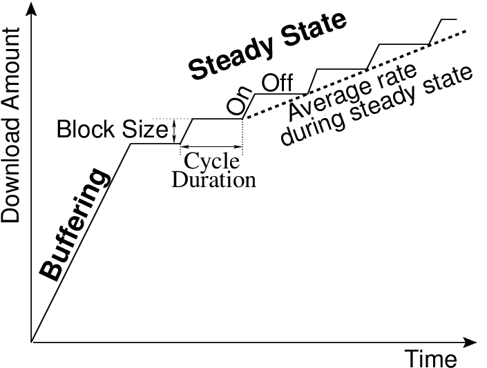

Overview
Video streaming represents a large fraction of Internet traffic. Surprisingly, little is known about the network characteristics of this traffic. In this paper, we study the network characteristics of the two most popular video streaming services, Netflix and YouTube. We show that the streaming strategies vary with the type of the application (Web browser or native mobile application), and the type of container (Silverlight, Flash, or HTML5) used for video streaming. In particular, we identify three different streaming strategies that produce traffic patterns from non-ack clocked ON-OFF cycles to bulk TCP transfer. We then present an analytical model to study the potential impact of these streaming strategies on the aggregate traffic and make recommendations accordingly.
Contributions


During a typical streaming session, the video content is transferred in two phases: a buffering phase followed by a steady state phase. During the buffering phase, the data transfer rate is limited by the end-to-end available bandwidth. The video player begins playback when a sufficient amount of data is available in its buffer. Video playback does not wait for the buffering phase to end. In the steady state phase, the average download rate is slightly larger than video encoding rate. This average download rate in the steady state phase is achieved by periodically transferring one block of video content. These periodic transfers produce cycles of ON-OFF periods. During each ON period, a block of data is transferred at the end-to-end available bandwidth that can be used by TCP; the TCP connection is idle during the OFF periods. We use the existence of the steady state phase and the technique used to throttle the data transfer rate in the steady state phase to identify the underlying streaming strategy. We observe the following three streaming strategies for Netflix and YouTube videos.
| Service | YouTube | NetFlix | ||
| Container | Flash | HTML5 | Flash (HD) | Silverlight |
| Internet Explorer | Short ON-OFF | Short ON-OFF | No ON-OFF | Short ON-OFF |
| Google Chrome | Short ON-OFF | Long ON-OFF | No ON-OFF | Short ON-OFF |
| Firefox | Short ON-OFF | No ON-OFF | No ON-OFF | Short ON-OFF |
| iOS | Not applicable | Multiple | Not applicable | Short ON-OFF |
| Android | Not applicable | Long ON-OFF | Not applicable | Long ON-OFF |
Papers
- [CONEXT11]
- Ashwin Rao, Yeon-sup Lim, Chadi Barakat, Arnaud Legout, Don Towsley, and Walid Dabbous. Network Characteristics of Video Streaming Traffic. In Proc. of ACM CoNEXT'11, Dec. 6--9, 2011, Tokyo, Japan. download
The slide of the CoNEXT presentation can be freely reused. However, the authors would appreciate if you inform them that you intend to use these slides.
The poster presented at CCNxCon'11 is also available for download.

Members
This work was a joint collaboration between researchers at INRIA, Sophia Antipolis and University of Massachusetts, Amherst.- Ashwin Rao (INRIA, Sophia Antipolis)
- Yeon-sup Lim (University of Massachusetts, Amherst)
- Chadi Barakat (INRIA, Sophia Antipolis)
- Arnaud Legout (INRIA, Sophia Antipolis)
- Don Towsley (University of Massachusetts, Amherst -- was visiting INRIA when this work was in its initial stages)
- Walid Dabbous (INRIA, Sophia Antipolis)
Dataset
Download the dataset
This dataset contains detail traffic logs of packets exchanged during YouTube and Netflix streaming sessions. Details about the dataset collection are available in the paper [RLB_CONEXT11]. For each streaming session, we used tcpdump to capture the packets exchanged between the streaming server(s) and our client. We then parsed these pcap files to log the packet timestamp, the tcp sequence number, and packet length of each packet exchanged between the streaming server(s) and the client. This dataset comprises of these logs along with other auxilary information that we used to better understand the observed traffic patterns. For ease of download, we have split the dataset in multiple tarball files.
-
YouTube data
This tarball contains the YouTube data in the format mentioned in dataset description. Please note that this tarball contains compressed folders.
Download YouTube data size: 1.5 GB, md5sum: e3062413b80160fe6b9117ca9057ca5f (YouTube.tar)
-
Netflix data
This tarball contains the Netflix data in the format mentioned in dataset description. Please note that this tarball contains compressed folders.
Download Netflix data size: 170 MB, md5sum: 21f844747dbead02c1e4b5b917d434d8 (Netflix.tar)
-
Parsing scripts
We also make available the scripts used to generate these datasets. This tarball contains the scripts used to parse the pcap files. Please contact the authors for details on how to use the scripts.
Download Parsing scripts size: 227 KB, md5sum: 42d7e1d047cfd6aa3b7fc028be21eaee (PcapParsing.tar.bz2)
-
Matlab scripts
We use Matlab to further process the datasets. This tarball contains the scripts we used to process the data, the output of the processing, and the matlab scripts to generate the plots present in the paper. Please contact the authors for details on how to use these scripts.
Download Matlab scripts size: 204 MB, md5sum: 148418916c01fdb7ee65cdfd102a26d0 (MatlabScripts.tar.bz2)
We would really appreciate if you inform us on how you plan to use this dataset. The raw pcap file used to generate this dataset are currently not available due to space constraints. If you require the raw pcap files please send us an email.
Dataset description
The YouTube and Netflix tarballs contain the following file structure and contents.
[Location Name] ├── [Container] │ ├── [Browser 1] │ │ ├── contentLengths │ │ ├── downEvolution │ │ ├── parsedIAT │ │ ├── parsedPayloadLens │ │ ├── parsedSeqNums │ │ ├── parseMeta │ │ ├── rcvwndEvolution │ │ ├── seqEvolution │ │ └── streamingIPs │ ├── [Browser 2] │ │ ├── contentLengths │ │ ├── downEvolution │ │ ├── parsedIAT │ │ ├── parsedPayloadLens │ │ ├── parsedSeqNums │ │ ├── parseMeta │ │ ├── rcvwndEvolution │ │ ├── seqEvolution │ │ └── streamingIPs
In our paper, we performed our measurements from locations: Home, Research, Residence, and University. Each of these four locations abstracts a network within which we streamed video to different browsers and devices. The YouTube measurements were carried out from each of these four locations while NetFlix measurements were carried out from Home and University. The Home and University locations are in USA while the other two locations, Research and Residence, are in France. The mobile measurements for YouTube were carried out from the location named Research while NetFlix measurements for mobile devices were carried out from the location named University.
YouTube uses Flash and HTML5 as the containers to stream videos while Netflix uses Silverlight as the video container.
The description of each file is as follows.
-
contentLengths: This file is specific to the YouTube dataset. We use this file to get an estimate of the encoding rate of the YouTube video viewed during the streaming session. Each line of this file has the following four entries.
- Video-ID
- is the identifier of the YouTube video. (See paper for further details).
- Content-Length
- contains the value present in the Content-Length field of the HTTP GET response. This is an estimate of the amount of video content that is streamed.
- Duration
- contains the video duration in seconds.
- Encoding Rate
- is an estimate of the encoding rate obtained by computing (Content-Length/Duration).
-
parseMeta : This file contains the meta information of the videos used for the given combination of container and webbrowser. This file is specific to the YouTube dataset. Each line in the file has the following four entries.
- Index
- is a sequentially incremenenting number. This number was assigned during the parsing of the pcap file.
- Video-ID
- is the identifier of the YouTube video. (See paper for further details).
- Source IP
- is the source address used by the Web browser during the streaming session.
- Youtube IP
- is the address of the YouTube server that streamed the YouTube video.
-
downEvolution: This file, stored in binary format, contains a matrix where each row represents a video and a column represents the amount of data downloaded. The number of rows in this matrix is the number of rows in the parseMeta file. The i-th row in the downEvolution file corresponds to video whose details are present in the the i-th row of parseMeta file. Each column in the downEvolution file represents a time window of 10 ms, where the i-th column represents the time interval [i*10, (i+1)*10) milliseconds since the start of streaming. We stopped the streaming session after 181 seconds therefore number of columns = 181*100 (stopTime*1000/10). These 18,100 columns are prefixed by two columns that contain the maximum number of columns in this row and the total number of valid columns for this row. Thus the number of columns in each row is available in the first integer of the file. We also put the total number of valid columns because the streaming session may last for less than 180 seconds (for example, videos that have a duration of less than 180 seconds). For example, consider the following two rows of this file.
18102 9 0 0 512 512 10240 0 1024 0 10240 -1 -1 ... 18102 11231 0 512 1024 512 1024 1024 0 0 21320 2034 100 ... Table 2. Sample entries in the downEvolution file. The first row can be read as follows. The first column value, 18102, is the number of columns. The second column indicates that the following 9 entries are valid. The third column indicates that 0 bytes were downloaded in the first 10 ms. The sixth column indicates that 10240 bytes were downloaded in the 10 ms interval.
-
rcvwndEvolution: The organization of the file is the same as downEvolution. Each column in this file represents the maximum receive window advertised by the client during the 10 ms interval corresponding to the column
-
seqEvolution: The organization of the file is the same as downEvolution. Each column in this file represents the maximum sequence number observed in the 10 ms interval corresponding to the column
-
parsedSeqNums: This file is stored in binary format. The first column of each row is the maximum number of columns in each row of the matrix. The second column in the total number of packets from the server to the client. Each column after these two columns represents a packet received by the browser/application. The value in each column is the sequence number of the packet received.
-
parsedPayloadLens: This file is stored in binary format. The first column of each row is the maximum number of columns in each row of the matrix. The second column in the total number of packets from the server to the client. Each column after these two columns represents a packet received by the browser/application. The value in each column is the amount of tcp payload (ip.length - ip.header_length - tcp.header_length) in the packet.
-
parsedIAT: This file is stored in binary format. The first column of each row is the maximum number of columns in each row of the matrix. The second column in the total number of packets from the server to the client. Each column after these two columns represents a packet received by the browser/application. The value in each column is the interarrival time between successive packets.
-
streamingIPs: This file is stored in ascii format. Each line of this file contains the list of IP addresses to used by the streaming server to transfer the video content.